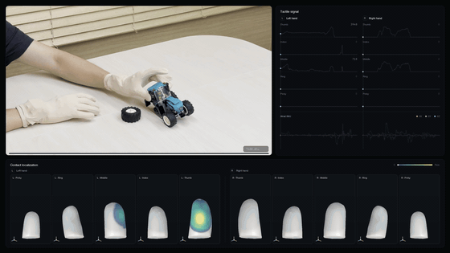

OGLO Tactile Glove Plugin#
C++ plugin that streams OGLO tactile gloves over BLE into the standard DeviceIO recording path. Each glove (one BLE device per hand) provides 80 tactile taxels (5 fingers × 4×4) plus a 6-axis IMU at 100 Hz. Source and plugin README: src/plugins/oglo_tactile/README.md.
This plugin follows the Add a New Device pattern (FlatBuffer schema → plugin
SchemaPusher → tracker → MCAP) and is modeled on the OAK camera plugin.
{kind=link}

Both OGLO gloves driving a live per-finger contact heatmap while manipulating an object — 80 taxels + a 6-axis IMU per hand, streamed over BLE at 100 Hz and time-synced with the operator’s hand/head tracking.#
Components#
Schema — src/core/schema/fbs/oglo_tactile.fbs (
OgloGloveSample/OgloGloveSampleTracked/OgloGloveSampleRecord).Plugin — src/plugins/oglo_tactile (BLE read → parse → OpenXR push).
Tracker —
OgloTactileTracker(src/core/deviceio_trackers/cpp/inc/deviceio_trackers/oglo_tactile_tracker.hpp) with live backendLiveOgloTactileTrackerImpl(src/core/live_trackers/cpp/live_oglo_tactile_tracker_impl.cpp).
Build#
Linux only (BlueZ). The plugin is off by default.
sudo apt install libdbus-1-dev # BlueZ daemon + libdbus for the BLE backend
cmake -B build -DBUILD_PLUGIN_OGLO=ON
cmake --build build --target oglo_tactile_plugin --parallel
nlohmann/json (MIT) is fetched automatically.
Note
BLE backend. The plugin talks to BlueZ directly over libdbus (AFL-2.1, permissive), so
the build carries no copyleft dependency and works out of the box. The
transport is isolated behind the OgloBleClient interface
(src/plugins/oglo_tactile/ble/oglo_ble_client.hpp), so an
alternative backend can be dropped in via make_ble_client() without
touching the parser, schema, or tracker.
Usage#
The plugin streams one glove (--side) and pushes it via OpenXR for a host
OgloTactileTracker to record:
# Push for a host OgloTactileTracker into a shared session MCAP
./build/src/plugins/oglo_tactile/oglo_tactile_plugin --side right --collection-prefix=oglo
The packet parser reads the device Config characteristic first and branches
on the notify flags byte (0x04 packed12 v5 — primary; 0x02/0x01
legacy schema-4 fallback), so payload sizes are never hardcoded.
Recorded data#
The host OgloTactileTracker records per hand into channels
oglo_<side>/oglo and oglo_<side>/oglo_tracked, carrying
core.OgloGloveSampleRecord: seq, device_time_us, taxels[80] (raw
12-bit, finger,row,col), and a 6-axis IMU, each with a DeviceDataTimestamp
whose sample_time_local_common_clock is on the shared host monotonic clock —
so OGLO aligns in time with hand/head streams.
Naming. The glove’s identity threads through several layers, but all of them
derive from the single --collection-prefix you pick (oglo below), with the
hand side appended. For the left hand:
Layer |
Where it is set |
Value (left hand) |
|---|---|---|
CLI flag |
|
|
OpenXR collection id |
|
|
MCAP recording base name |
|
|
MCAP channels |
|
|
Plugin device path |
|
The right hand mirrors this (right / oglo_right), so mcap info on a
recording shows oglo_left/oglo (+ _tracked) and oglo_right/oglo
(+ _tracked).
A complete data-collection demo (MetaQuest hand/head + both gloves + a live
in-headset tactile heatmap) lives at
examples/oglo_tactile; see its README.md.
IMU frame#
Each sample includes a 6-axis IMU reading — a 3-axis accelerometer and 3-axis
gyroscope — as raw int16 sensor counts. Scale: accel ±8 g
(≈0.000244 g/LSB), gyro ±2000 dps (≈0.061 dps/LSB). The IMU is
wrist-mounted, so its axes form a single wrist-fixed frame — they track the
wrist, not individual fingers, and are the sensor’s own raw axes (not aligned to
an anatomical hand frame). For absolute orientation, apply the IMU-to-hand
extrinsic supplied with the hardware, or calibrate against gravity for just “up”.
Tests#
test_oglo_packet_parser validates the wire decode against the firmware’s own
12-bit packing reference, plus the schema-4 fallback and malformed-packet
rejection:
ctest --test-dir build -R oglo_packet_parser --output-on-failure